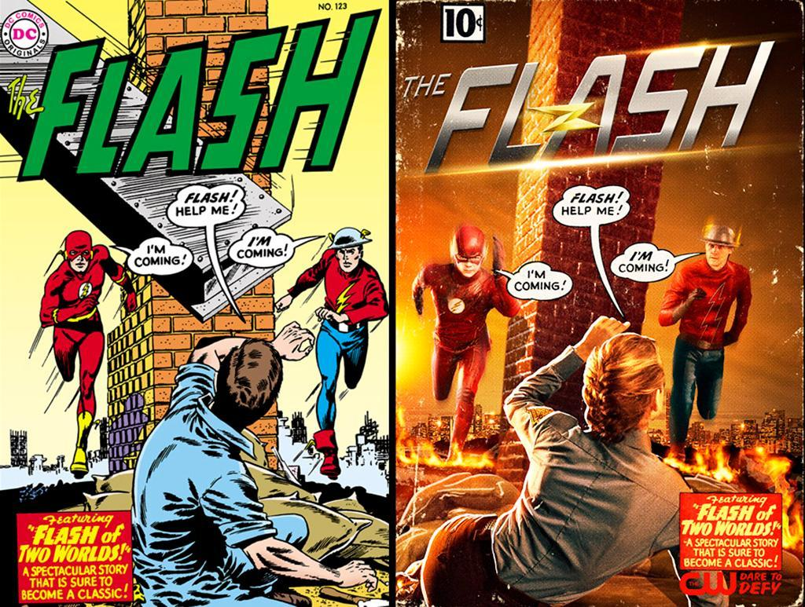

Flash S02|E02 Flash of Two Worlds
The Flash hasn’t wasted any time in getting to the good stuff that was promised for Season 2. This was only the second episode, and already the show is diving headlong into the multiverse concept, shedding more light on the mysterious villain known only as Zoom and giving us the much-hyped team-up between Barry Allen and Jay Garrick.
Following his quick cameo appearance last week, Jay (Teddy Sears) quickly stepped into the spotlight and laid out the entire multiverse concept to the S.T.A.R. Labs crew. More than the exposition about Earth-2, it was a welcome treat to actually see Jay in action against Zoom. Based on his look and single-minded obsession with killing speedsters, it appears that this villain has as much in common with the Black Flash as he does the Zoom from the comics. I’m excited to see how the writers have chosen to reinterpret and combine the two characters.
Jay made for a solid addition to the lineup, even if we didn’t get to see his speed powers in action beyond that brief flashback. He brought a quick, easy charm to the role that played nicely with Carlos Valdes and Danielle Panabaker especially. The romantic tension between Jay and Caitlin was a welcome touch. It is a little weird to see Caitlin so willing to move on after Ronnie’s death, but to be fair, it has been six months since their disastrously short-lived wedding.
It was disappointing that this superhero team-up played out with only one character actually having access to speed powers. On the other hand, that’s probably something we’ll see the show build towards over time. And to be fair, there’s no better test of a superhero’s character than how they conduct themselves when they don’t have their powers to fall back on. In that sense, Jay passed with flying colors. Plus, despite Jay’s lack of speed powers, the two Flashes got their chance to recreate that iconic image for the cover of The Flash #123. How could you not include that visual homage?

As for Sand Demon, he was another case of a villain serving as more a means to an end than a fleshed-out character. Unlike last week’s disappointingly superficial handling of Atom-Smasher, I didn’t really mind that approach. Sand Demon is a pretty minor footnote of a character, and he doesn’t have the complex back-story and emotional baggage of Al Rothstein. Sand Demon was just a bad dude with some cool powers that was defeated when Barry unleashed a new move in his growing arsenal.
There were plenty of developments when it came to the supporting cast this week. Patty Spivot (Shantel Van Santen) made her big debut this week as an ambitious rookie cop hell-bent on joining Joe’s now non-existent task force. While she initially came across as your stereotypical “I’m young and good at everything” super-cop, the combination of Patty’s eagerness, her dorkiness (that Monty Python-quoting scene with Barry was pretty neat) and her tragic back-story quickly lent her some depth.
That said, it was great to see that final scene and the glimpse of Earth-2’s Harrison Wells. It seems that this is how Tom Cavanagh will continue to have a presence in the show. That should add a fun twist to Barry’s ongoing struggle to move past his Wells’ betrayal. Interestingly, Earth-2’s Wells gave off an intense and even creepy vibe in his brief appearance. Perhaps he’s also hiding a few dark secrets beneath his benevolent exterior? I just hope he isn’t revealed to be Zoom. That would be boringly predictable.
Next weeks episode preview: